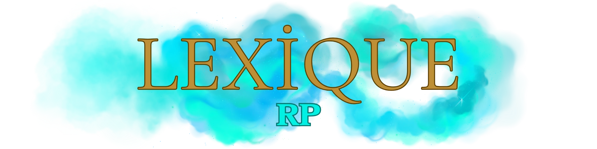

Power Gaming
Réaliser des actions impossibles dans la vie réelle.
Méta Gaming
Utiliser en RP des informations obtenues de manière HRP (Hors RP).
Mass RP
Prendre en compte la présence de centaines d'élèves et de personnel dans l'école de magie. Les couloirs sont animés par les étudiants, les salles communes accueillent les membres des différentes maisons, l'infirmerie est occupée par le personnel soignant, et les bureaux des professeurs sont dirigés par des enseignants compétents.
Fear RP
Simuler la peur lorsque la situation devient dangereuse (par exemple, lors d'un duel de sorciers, en étant en infériorité numérique ou face aux Aurors). Ne pas simuler cette peur est considéré comme du No Fear et peut entraîner une mort RP.
Pain RP
Simuler la douleur.
Force RP
Forcer un joueur à réaliser une action qui le met mal à l'aise HRP ou forcer la création d'une scène.
Use Bug
L'utilisation de bugs, de glitches ou le fait de se déconnecter/reconnecter pour se réanimer est strictement interdite et peut entraîner un bannissement définitif.
Car Kill
Percuter intentionnellement un autre personnage à l'aide d'un balai ou d'un autre moyen de transport magique, ce qui est strictement interdit.
Bunny Hop
Courir et sauter en même temps pour se déplacer plus vite, ce qui est totalement interdit.
Win RP
Chercher à gagner une scène à tout prix.
Raccourci RP
Comme précisé dans la règle du Mass RP, l'école est très fréquentée. Exemple, il est interdit d'accuser un élève de Serpentard d'appartenir à un groupe de magie noire sans preuves.